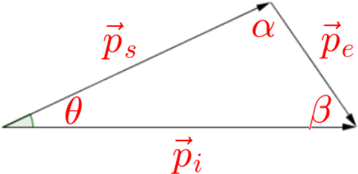

Photons
Einstein’s theory predicted that photons have both energy and momentum: $$E = hf = \frac{hc}{\lambda} = cp$$
- The photoelectric effect and Planck’s explanation of blackbody radiation demonstrate the photons do have the predicted energy.
- To show that photons have the predicted momentum, we would need to examine their behaviour duing collisions with other particles such as electrons.
Elastic Collisions
Consider a collision between a photon and an electron (initially at rest), where the photon scatters to an angle \(\theta\) and for which both energy and momentum must be conserved.

- \(\vec{\mathbf p}_i\) is the momentum of the incident (before collision) photon.
- \(\vec{\mathbf p}_s\) is the momentum of the scattered (after collision) photon.
- \(\vec{\mathbf p}_e\) is the momentum acquired by the electron due to the collision.
- We can represent momentum conservation by writing the law of cosines: $$p_e^2 = p_i^2 + p_s^2 - 2p_i p_s\cos\theta$$
- Energy is also conserved, so the electron energy is equal to the energy lost by the photon: $$\frac{1}{2}mv_e^2 = \frac{1}{2}m\left(\frac{p_e}{m}\right)^2 = cp_i - cp_s$$
- An important consequence of this equation is that the scattered photon has less energy and less momentum than the incident photon, because some of that energy has been transferred to the electron.
- If Einstein’s equations are correct, the scattered photon will have a longer wavelength than the incident photon.
- This phenomenon — that the photon wavelength increases after scattering from an electron — is called the Compton Effect.
Relativistic Effects
We could combine the energy and momentum equations by substituting for \(p_e^2\): $$p_e^2 = p_i^2 + p_s^2 - 2p_i p_s\cos\theta = 2mc(p_i - p_s)$$
- This would allow us to solve for \(p_s\) for any given \(p_i\) and \(\theta\).
- This prediction can be confirmed experimentally!
- The derivation above uses the Newtonian equations for the kinetic energy and momentum of the electron, which is only valid if the electron speed remains much slower than the speed of light.
- We can obtain a more general equation if we replace the Newtonian equations by their relativistic equivalents.
- The relativistic derivation produces a simple result: $$\Delta\lambda = \frac{h}{mc}(1 - \cos\theta)$$
- The maximum shift in the wavelength occurs when a photon scatters to 180°: $$\Delta\lambda = \frac{h}{mc}(1-(-1)) = 4.85\times 10^{-12}\ {\mathrm m}$$
- Because this shift is so small, the Compton Effect is most noticable using x-ray photons.
Compton’s Experiment
Arthur H. Compton conducted the experiment to test whether the scattered photon wavelength changed as predicted: $$\Delta\lambda = \frac{h}{mc}(1 - \cos\theta)$$
- Compton set up an x-ray source to fire photons at a target.

- A detector was set up at an angle \(\theta\) to measure the wavelength of the scattered x-rays.
- The scattering angle \(\theta\) was manipulated and the change in wavelength, \(\Delta\lambda\), was the responding variable.
- The wavelength of the incident x-rays was controlled.
- Compton observed that some of the scattered photons had the predicted wavelength.
- Other scattered x-rays had the same wavelength as the incident ones.
- These photons collided with a nucleus in the target rather than an electron...
- Since the nuclear mass is several thousand times larger than the electrons’, the shift in wavelength is much smaller.